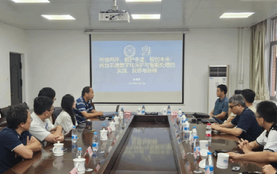
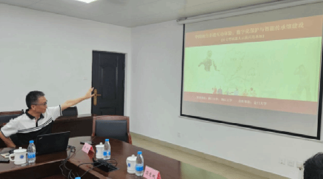
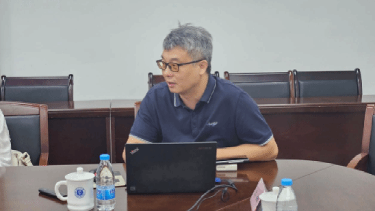
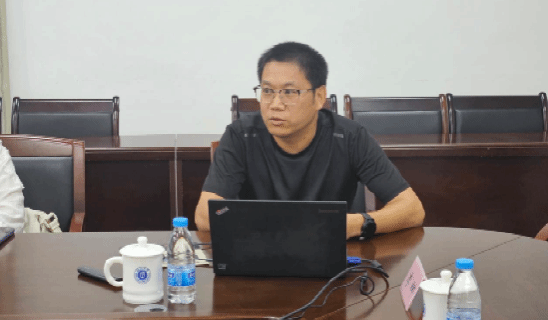
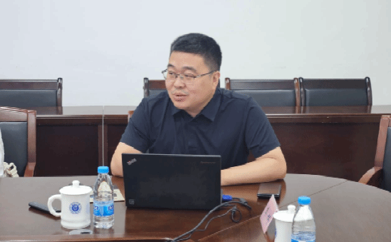
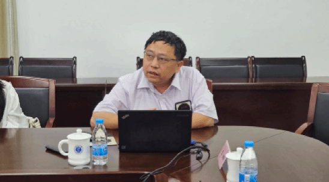
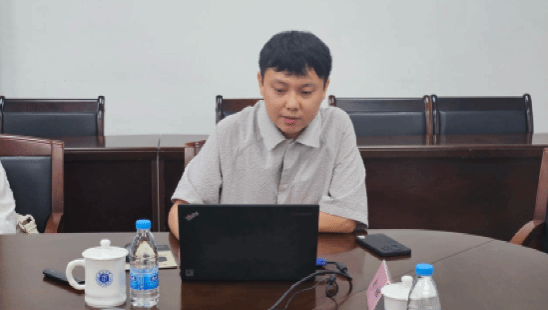
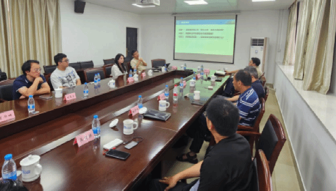
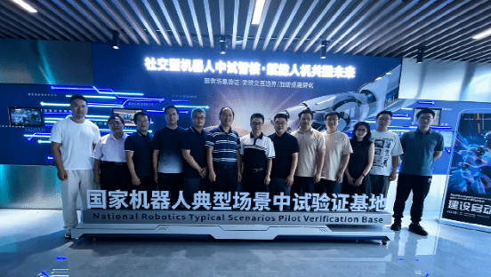

2026年7月7日，闽台非遗文旅部重战略研讨会在福建闽江大学召开。本次研讨会由闽台非遗文化数字化保护与智能处理文化和旅游部重点实验室主办，围绕实验室未来重点攻关方向、团队协作机制、闽台特色深化路径等核心议题展开深入研讨。
研讨会由实验室副主任姚俊峰教授主持开场。
实验室主任史晓东教授以“桥接两岸，数护非遗，智创未来：闽台非遗数字化保护与智能处理的实践、反思与新程”为题作主旨报告。报告对实验室当前定位进行了深入剖析，指出实验室在各文旅部重点实验室中处于中游位置，研究成果虽具有一定的闽台特色，但整体显示度不足，尚未形成重大的国内学术圈与行业影响。史晓东教授强调，实验室必须直面差距、聚焦优势，紧扣闽台地域文化特色，凝练出具有不可替代性的重大主攻方向，以差异化路径提升实验室的核心竞争力与行业话语权。

在专题报告环节，姚俊峰教授分享了非遗文化项目申报经验。团队依托近10年积累的120项社交型机器人、数字人、动态画自动生成等发明专利技术，联合工信部机器人典型场景中试基地、文旅部重点实验室、海峡两岸融合发展研究院以及厦门大学、闽江大学、金门大学等两岸高校，正着力打造社交机器人在闽台非遗互动体验、数字化保护与智能传承领域的示范应用。

王量量副主任以“建筑类非遗技艺数字化保护路径探索”为题作专题汇报。 他表示，AI技术虽极大便利古建数字化建模，但无法替代田野调查。AI时代更需重视实地勘测与非遗传承人深度访谈，依靠一手现场资料弥补算法偏差，避免文化解读片面。团队结合实地测绘、匠人口述史料与三维扫描技术，构建完整建筑非遗数字档案，平衡数字技术与人文传承，为闽台非遗长效保护提供可行思路。

吴清强教授以“LLM驱动的全自动化虚拟制片平台及其在闽台非遗数字化创作中的应用”为题作报告，围绕厦门大学Filmaker创影者一站式虚拟电影拍摄平台展开分享，聚焦以智能影视创作赋能闽台非遗数字化传承。该平台搭建多智能体协作体系，实现了从主题输入、剧本生成、数字人表演、智能运镜到方言配音的成片全流程自动化，可虚拟复刻戏台、工坊、庙会等闽台非遗实景。项目已围绕文旅宣传、节庆云演绎、IP影视企划、非遗短剧等几大方向落地应用，依托成本优势批量产出3D影视内容，活化留存歌仔戏、妈祖民俗、传统手工艺等两岸同源非遗，以数字影像搭建起闽台文化交流新桥梁。

陈中贵教授围绕“面向非遗数字化保护的高质量几何建模与仿真研究”展开报告，系统介绍了与曹娟教授团队在几何建模与物理仿真领域的两项创新实践。针对国家级非遗惠安影雕“以针代笔、以点成像”的独特工艺，团队融合渲染与仿真方法生成标准化点阵方案，支撑雕刻技艺的量化传承与智能生产。团队还构建了针织物设计仿真系统，实现全流程数字化，还原非遗服饰材质，辅助产业化生产，推动保护与活态延续。

陈毅东教授以“歌仔戏唱腔合成的一点思考”为题，分享了闽台传统戏曲数字化合成的研究进展与思考。在简要梳理歌仔戏发展源流的基础上，他分析了当前歌仔戏唱腔合成方法存在的问题，提出了改进的初步设想，并着重介绍了目前数据汇聚的相关情况。

王贞众助理教授代表江敏教授团队作了题为“科学计算智能赋能闽台文化数字化处理”的报告。报告阐述了物理场仿真技术在器物数字化建模领域的潜力——将力学、材质等真实物理参数融入三维建模体系，可逼真再现文物、传统器具在物理世界中的动态表现，支撑文物动态复原、传统技艺数字演示、沉浸式线上线下展陈等多元场景落地。

综合性研讨环节由苏劲松教授主持，实验室成员围绕未来发展方向展开充分讨论，形成了重要共识：实验室目前已形成面向非遗的“技术研发—文化解析—产业应用”全链条能力，下阶段工作应进一步强化方言及戏曲非遗方向的深度研究与系统布局。该方向能够有效贯通实验室在自然语言处理（尤其是方言处理）、数字人、动作捕捉、文化传播、元宇宙等多个关键领域的技术积累，形成以闽台非遗文化内核为牵引、全链条技术协同支撑的研究体系。与会老师们一致认为，实验室在该方向已具备良好的研究基础，下一步需集中优势力量、明确标志性目标，力争在闽台方言语音合成、戏曲数字化重现与智能传播等方面产出一批有显示度的突破性成果，从而切实强化实验室在文旅部重点实验室序列中的特色定位与行业影响力。

会后，姚俊峰副主任带领与会人员前往国家机器人检验检测公共服务平台中试验证矩阵——机器人典型场景中试验证基地（筹）考察交流，实地了解基地在具身智能技术赋能新文旅、以科技创新驱动福建文化产业高质量发展等关键领域的研究进展与实践成果。

本次研讨会是部重实验室一场重要的战略务虚会。会议紧扣“明确未来重点攻关方向、优化团队协作机制、深化闽台特色研究路径”三大核心议题，通过专题报告与集中研讨，全面梳理了实验室既有优势与短板，并在关键技术突破、两岸协同创新、成果转化应用等方面形成了广泛共识。此次闭门研讨，标志着实验室从“分散探索”迈向“系统攻坚”的关键转折，为持续深化闽台非遗数字化保护与智能处理研究奠定了坚实的组织与战略基础。